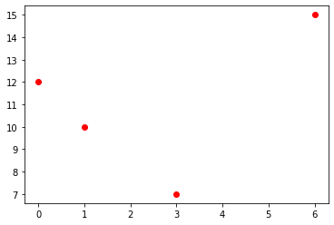
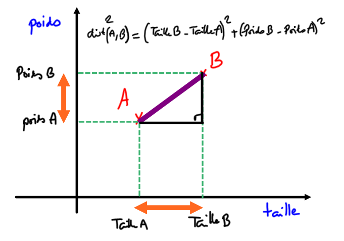

Prédiction du poste d'un joueur de rugby
Rappels sur la manipulation de fichiers CSV
Les fichiers CSV (pour Comma Separated Values) sont des fichiers-texte (ils ne contiennent aucune mise en forme) utilisés pour stocker des données, séparées par des virgules (ou des points-virgules, ou des espaces...). Il n'y a pas de norme officielle du CSV.
Exploitation d'un fichier CSV en Python avec le module CSV
Python permet de lire et d'extraire des informations d'un fichier CSV même très volumineux, grâce à des modules dédiés, comme le bien-nommé csv, utilisé ici.
Pour commencer, nous allons travailler à partir de l'exemple suivant : exemple.csv.
Première méthode
Le script suivant :
import csv
f = open('exemple.csv', "r", encoding='utf-8') # le "r" signifie "read", le fichier est ouvert en lecture seule
donnees = csv.reader(f) # donnees est un objet (spécifique au module csv) qui contient des lignes
for ligne in donnees:
print(ligne)
f.close() # toujours fermer le fichier !
donne :
['Prénom', 'Nom', 'Email', 'SMS']
['John', 'Smith', 'john@example.com', '33123456789']
['Harry', 'Pierce', 'harry@example.com', '33111222222']
['Howard', 'Paige', 'howard@example.com', '33777888898']
Problèmes
- Les données ne sont pas structurées : la première ligne est la ligne des «descripteurs» (ou des «champs»), alors que les lignes suivantes sont les valeurs de ces descripteurs.
- La variable
donneesn'est pas exploitable en l'état. Ce n'est pas une structure connue.
Améliorations
Au lieu d'utiliser la fonction csv.reader(), utilisons csv.DictReader(). Comme son nom l'indique, elle renverra une variable contenant des dictionnaires.
Le script suivant :
import csv
f = open('exemple.csv', "r", encoding='utf-8')
donnees = csv.DictReader(f)
for ligne in donnees:
print(dict(ligne))
f.close()
donne
{'Prénom': 'John', 'Nom': 'Smith', 'Email': 'john@example.com', 'SMS': '33123456789'}
{'Prénom': 'Harry', 'Nom': 'Pierce', 'Email': 'harry@example.com', 'SMS': '33111222222'}
{'Prénom': 'Howard', 'Nom': 'Paige', 'Email': 'howard@example.com', 'SMS': '33777888898'}
C'est mieux ! Les données sont maintenant des dictionnaires. Mais nous avons juste énuméré 3 dictionnaires. Comment ré-accéder au premier d'entre eux, celui de John Smith ? Essayons :
>>> donnees[0]
Traceback (most recent call last):
File "<console>", line 1, in <module>
TypeError: 'DictReader' object is not subscriptable
Une liste de dictionnaires
Nous allons donc créer une liste de dictionnaires. Le script suivant :
import csv
f = open('exemple.csv', "r", encoding='utf-8')
donnees = csv.DictReader(f)
amis = []
for ligne in donnees:
amis.append(dict(ligne))
f.close()
permet de faire ceci :
>>> amis
[{'Prénom': 'John',
'Nom': 'Smith',
'Email': 'john@example.com',
'SMS': '33123456789'},
{'Prénom': 'Harry',
'Nom': 'Pierce',
'Email': 'harry@example.com',
'SMS': '33111222222'},
{'Prénom': 'Howard',
'Nom': 'Paige',
'Email': 'howard@example.com',
'SMS': '33777888898'}]
>>> print(amis[0]['Email'])
john@example.com
>>> print(amis[2]['Nom'])
Paige
Un fichier un peu plus intéressant : les joueurs de rugby du TOP14
Le fichier top14.csv contient tous les joueurs du Top14 de rugby, saison 2019-2020, avec leur date de naissance, leur poste, et leurs mensurations.
Ce fichier a été généré par Rémi Deniaud, de l'académie de Bordeaux.
Exercice 1 ⭐
Stocker dans une variable joueurs les renseignements de tous les joueurs présents dans ce fichier csv.
Première analyse
Extraction de données particulières
Exercice 5 ⭐
Qui sont les joueurs de plus de 140 kg ?
Attention à bien convertir en entier la chaine de caractère renvoyée par la clé Poids, à l'aide de la fonction int()
Exploitation graphique
Nous allons utiliser le module Matplotlib pour illustrer les données de notre fichier csv.
Pour tracer un nuage de points (par l'instruction plt.plot), Matplotlib requiert :
- une liste
Xcontenant toutes les abscisses des points à tracer. - une liste
Ycontenant toutes les ordonnées des points à tracer.
Exemple
import matplotlib.pyplot as plt
X = [0, 1, 3, 6]
Y = [12, 10, 7, 15]
plt.plot(X, Y, 'ro')
plt.show()
Dans l'instruction plt.plot(X, Y, 'ro') :
Xsont les abscisses,Ysont les ordonnées,'ro'signifie :

Application
Exercice 6 ⭐
Afficher sur un graphique tous les joueurs de rugby du top14, en mettant le poids en abscisse et la taille en ordonnée.
Exercice 7 ⭐
Faire apparaître ensuite les joueurs évoluant au poste de Centre en bleu, et les 2ème lignes en vert.
Rappels sur le tri des données
Nous continuons d'exploiter notre fichier de joueurs de rugby du Top14.
Créer une fonction filtre
Exercice 1 ⭐
Créer une fonction joueurs_equipe qui renvoie une liste contenant les fiches de tous les joueurs de l'équipe equipe passée en paramètre.
Exemple d'utilisation :
>>> joueurs_equipe('Bordeaux')
[{'Equipe': 'Bordeaux', 'Nom': 'Jefferson POIROT', 'Poste': 'Pilier', 'Date de naissance': '01/11/1992', 'Taille': '181', 'Poids': '117'}, {'Equipe': 'Bordeaux', 'Nom': 'Lasha TABIDZE', 'Poste': 'Pilier', 'Date de naissance': '04/07/1997', 'Taille': '185', 'Poids': '117'}, {'Equipe': 'Bordeaux', 'Nom': 'Laurent DEL.....
Exercice 2 ⭐
Définir de la même manière une fonction joueurs_poste qui prend une chaîne de caractères poste et qui renvoie la liste des fiches des joueurs jouant à ce poste.
Exemple d'utilisation :
>>> joueurs_poste("Talonneur")
[{'Equipe': 'Agen', 'Nom': 'Clément MARTINEZ', 'Poste': 'Talonneur', 'Date de naissance': '14/03/1996', 'Taille': '181', 'Poids': '105'}, {'Equipe': 'Agen', 'Nom': 'Marc BARTHOMEUF', 'Poste': 'T...
Utilisation d'une fonction de tri
Le problème
Comment classer les joueurs suivant leur taille ?
La fonction sorted(liste) est efficace sur les listes : elle renvoie une nouvelle liste triée dans l'ordre croissant.
>>> ma_liste = [4, 2, 8, 6]
>>> ma_nouvelle_liste = sorted(ma_liste)
>>> print(ma_nouvelle_liste)
[2, 4, 6, 8]
Mais comment trier un dictionnaire ?
>>> test = sorted(joueurs)
Traceback (most recent call last):
File "<console>", line 1, in <module>
TypeError: '<' not supported between instances of 'dict' and 'dict'
Il est normal que cette tentative échoue : un dictionnaire possède plusieurs clés différentes. Ici, plusieurs clés peuvent être des critères de tri : la taille, le poids. Nous allons donc utiliser la même stratégie que celle vue dans les différentes méthodes de tri.
Un exemple de tri de dictionnaire
Simpsons = [{"Prenom" : "Bart", "age estimé": "10"},
{"Prenom" : "Lisa", "age estimé": "8"},
{"Prenom" : "Maggie", "age estimé": "1"},
{"Prenom" : "Homer", "age estimé": "38"},
{"Prenom" : "Marge", "age estimé": "37"}]
def age(personnage):
return int(personnage["age estimé"])
>>> age(Simpsons[0])
10
La création de cette fonction age va nous permettre de spécifier une clé de tri, par le paramètre key :
Tri d'un dictionnaire
>>> tri_Simpsons = sorted(Simpsons, key=age)
>>> tri_Simpsons
[{'Prenom': 'Maggie', 'age estimé': '1'},
{'Prenom': 'Lisa', 'age estimé': '8'},
{'Prenom': 'Bart', 'age estimé': '10'},
{'Prenom': 'Marge', 'age estimé': '37'},
{'Prenom': 'Homer', 'age estimé': '38'}]
On peut aussi inverser l'ordre de tri :
Tri décroissant
>>> tri_Simpsons = sorted(Simpsons, key=age, reverse=True)
>>> tri_Simpsons
[{'Prenom': 'Homer', 'age estimé': '38'},
{'Prenom': 'Marge', 'age estimé': '37'},
{'Prenom': 'Bart', 'age estimé': '10'},
{'Prenom': 'Lisa', 'age estimé': '8'},
{'Prenom': 'Maggie', 'age estimé': '1'}]
Exercice 5 ⭐
Trier les joueurs de Bordeaux suivant leur Indice de Masse Corporelle (IMC)
Recherche des joueurs de profil physique similaire
Distance entre deux joueurs
Exercice 6 ⭐
Construire une fonction distance qui renvoie la somme des carrés des différences de tailles et de poids entre deux joueurs joueur1 et joueur2, passés en paramètres.
Cette fonction nous permettra d'estimer la différence morphologique entre deux joueurs.
Exemple d'utilisation :
>>> distance(joueurs[23], joueurs[31])
244
Vérification :
>>> joueurs[23]
{'Equipe': 'Agen', 'Nom': 'Alban CONDUCHÉ', 'Poste': 'Centre', 'Date de naissance': '29/10/1996', 'Taille': '190', 'Poids': '102'}
>>> joueurs[31]
{'Equipe': 'Agen', 'Nom': 'JJ TAULAGI', 'Poste': 'Arrière', 'Date de naissance': '18/06/1993', 'Taille': '180', 'Poids': '90'}
\((102-90)^2+(190-180)^2=244\)
Distance des joueurs avec Baptiste Serin
Retrouvons d'abord le numéro de Baptiste Serin dans notre classement de joueurs :
>>> for k in range(len(joueurs)) :
if joueurs[k]['Nom'] == 'Baptiste SERIN' :
print(k)
530
>>> joueurs[530]
{'Equipe': 'Toulon',
'Nom': 'Baptiste SERIN',
'Poste': 'Mêlée',
'Date de naissance': '20/06/1994',
'Taille': '180',
'Poids': '79'}
Baptiste SERIN est donc le joueur numéro 530.
Exercice 7 ⭐
Créer une fonction distance_Serin qui prend en paramètre un joueur et qui renvoie sa différence avec Baptiste Serin.
Exemple d'utilisation :
>>> distance_Serin(joueurs[18])
745
Exercice 8 ⭐
Classer l'ensemble des joueurs du Top14 suivant leur différence morphologique avec Baptiste Serin (du plus proche au plus éloigné). Afficher le nom des 10 premiers joueurs.
Mise en place de l'algorithme k-NN
Objectif
Nous souhaitons pouvoir répondre à cette question :
Question
Si on croise une personne (qu'on appelera joueur X) nous disant qu'elle veut jouer en Top14, et qu'elle nous donne son poids et sa taille, peut-on lui prédire à quel poste elle devrait jouer ?
Nous devons donc créer une fonction conseil_poste qui prend en argument poids et taille , qui sont les caractéristiques du joueur X. Cette fonction prendra aussi en paramètre un nombre k qui sera le nombre de voisins utilisés pour déterminer le poste conseillé.
La fonction doit renvoyer une chaîne de caractère correspondant au poste auquel on lui conseille de jouer.
Il va falloir pour cela classer tous les joueurs du Top14 suivant leur proximité morphologique avec notre joueur X, et prendre parmi les k premiers joueurs le poste majoritaire.
Fonction distance morphologique
Dans toute idée de classification il y a l'idée de distance. Il faut comprendre la distance comme une mesure de la différence.
Comment mesurer la différence physique entre deux joueurs de rugby ?

Exercice 1 ⭐ Fonction distance
Écrire une fonction distance qui reçoit en paramètres :
poids: le poids du joueur Xtaille: la taille du joueur Xjoueur: un joueur de la listejoueurs
joueur.
Exemple d'utilisation :
>>> distance(93, 190, joueurs[34])
445
Classement des joueurs suivant leur proximité morphologique
De la même manière qu'on avait classé les joueurs suivant leur IMC, on peut les classer suivant leur proximité morphologique avec le joueur X.
Fonction second
Exercice 2 ⭐ Fonction second
Écrire une fonction second qui reçoit en paramètres couple, un couple de valeurs, et qui renvoie le deuxième élément du couple.
Exemple d'utilisation :
>>> cpl = ("vendredi", 13)
>>> second(cpl)
13
Classement des k plus proches joueurs
Exercice 3 ⭐ Fonction classement_k_joueurs
Écrire une fonction classement_k_joueurs qui reçoit en paramètres :
poids: le poids du joueur Xtaille: la taille du joueur Xk: le nombre de joueurs les plus proches que l'on veut garder
k joueurs classés suivant leur proximité morphologique avec le joueur X.
Exemple d'utilisation :
>>> classement_k_joueurs(85, 186, 3)
[{'Equipe': 'Bordeaux', 'Nom': 'Geoffrey CROS', 'Poste': 'Arrière', 'Date de naissance': '08/03/1997', 'Taille': '185', 'Poids': '85'}, {'Equipe': 'Toulouse', 'Nom': 'Romain NTAMACK', 'Poste': 'Ouverture', 'Date de naissance': '01/05/1999', 'Taille': '186', 'Poids': '84'}, {'Equipe': 'Bayonne', 'Nom': 'Manuel ORDAS', 'Poste': 'Ouverture', 'Date de naissance': '21/02/1998', 'Taille': '186', 'Poids': '83'}]
Recherche du poste le plus représenté
Dictionnaire d'occurrence des postes
Exercice 4 ⭐ Fonction occurrence
Écrire une fonction occurrence qui reçoit en paramètres joueurs, une liste de joueurs et qui renvoie le dictionnaire composé différents postes de ces joueurs, et du nombre de fois où ils apparaissent dans la liste joueurs.
Exemple d'utilisation :
>>> occurrence(joueurs)
{'Pilier': 110, 'Talonneur': 50, '2ème ligne': 74, '3ème ligne': 111, 'Mêlée': 42, 'Ouverture': 38, 'Centre': 71, 'Ailier': 64, 'Arrière': 35}
Tri d'un dictionnaire
Exercice 5 ⭐ Fonction cle_max
Écrire une fonction cle_max qui reçoit en paramètre d, un dictionnaire dont les clés sont des chaines de caractère et les valeurs sont des nombres, et qui renvoie la clé associée à la valeur maximale.
Exemple d'utilisation :
>>> d = {"lundi": 13, "mardi": 9, "mercredi": 18, "jeudi": 4}
>>> cle_max(d)
'mercredi'
Fonction conseil_poste
Exercice 6 ⭐ Fonction conseil_poste
Écrire une fonction conseil_poste qui reçoit en paramètres :
poids: le poids du joueur Xtaille: la taille du joueur Xk: le nombre de joueurs les plus proches sur lequel on se base pour faire la prédiction et qui renvoie le poste le plus compatible avec la morphologie de X.
>>> conseil_poste(70, 170, 6)
'Mêlée'
>>> conseil_poste(120, 210, 6)
'2ème ligne'
Faire varier les différents paramètres pour observer leur rôle respectif.